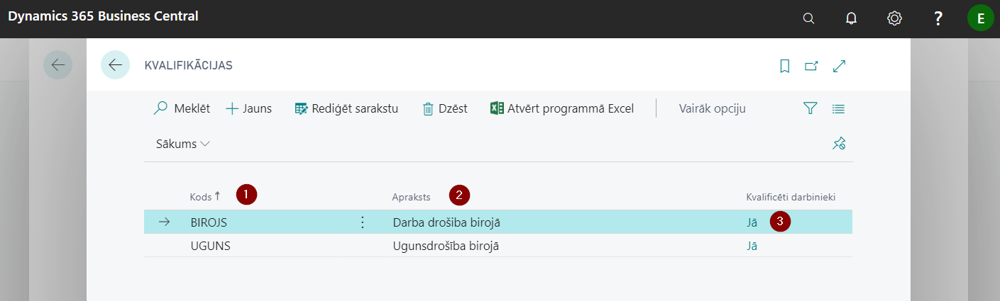
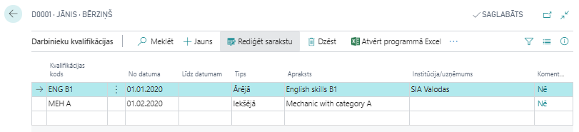
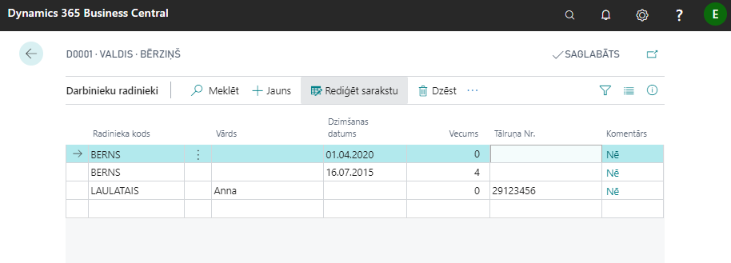
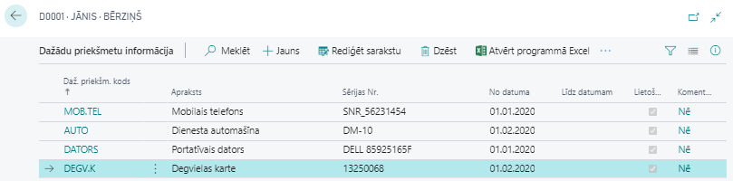
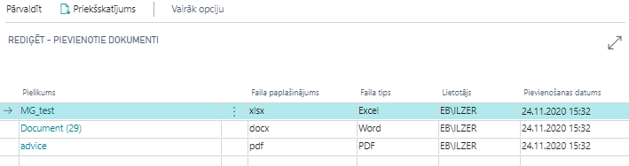

Darbinieka papildus informācija
Darbinieka kartiņā var ievadīt dažādu papildinformāciju, kas attiecas uz konkrēto darbinieku:
- Kvalifikācijas
- Konfidenciāla informācija
- Alternatīvās adreses
- Radinieki
- Dažādu priekšmetu informācija
- Ziņu kodi
- Saistītā informācija
- Maksājumi trešajām pusēm
- Komentāri
- Pielikumi
- Darbinieka attēls
Kvalifikācija
Sistēmā var uzturēt darbinieku kvalifikācijas sarakstu. Pamatojoties uz to, var izsekot termiņiem, kad apmācības/ instruktāžas jāveic atkārtoti (piemēram, izmantojot atskaiti Darbinieku kvalifikācijas).
Lai varētu uzsākt kvalifikācijas uzskaiti, nepieciešams reģistrēt sarakstā Kvalifikācijas uzņēmumam aktuālos kvalifikāciju veidu kodus un to aprakstus. Kvalifikācijas kodus ievada katru jaunā rindiņā, norādot brīvi izvēlētu kodu ( ) un attiecīgās kvalifikācijas aprakstu (
) un attiecīgās kvalifikācijas aprakstu ( ). Ja laukā Kvalificēti darbinieki (
). Ja laukā Kvalificēti darbinieki ( ) ir atzīme Jā, tad klikšķinot uz saites var apskatīt sarakstu, kuriem darbiniekiem ir šī konkrētā kvalifikācija.
) ir atzīme Jā, tad klikšķinot uz saites var apskatīt sarakstu, kuriem darbiniekiem ir šī konkrētā kvalifikācija.

Kad saraksts Kvalifikācijas aizpildīts, var definēt darbinieka kvalifikācijas, izvēloties Darbinieka kartiņas rīkjoslā Naviģēt - Darbinieks - Kvalifikācijas.

| Lauka nosaukums | Apraksts |
|---|---|
| Kvalifikācijas kods | Kods no kvalifikāciju klasifikatora. |
| No datuma | Kvalifikācijas iegūšanas datums. |
| Līdz datumam | Kvalifikācija spēkā līdz. |
| Tips | Izvēlas izcelsmi: iekšēja, ārēja, no iepriekšējās darba vietas. |
| Apraksts | Izglītības veida apraksts, aizpildās no kvalifikāciju klasifikatora. |
| Institūcija/Uzņēmums | Ārējas kvalifikācijas izcelsmes iestādes nosaukums. |
| Komentārs | Atzīme par to, ka ierakstam ir pievienots komentārs. |
Konfidenciāla informācija
Sarakstā uzglabā informāciju par darbinieku, kas klasificējama kā konfidenciāla. Nekur citur sistēmā šī informācija netiks parādīta. Katram konfidenciālas informācijas ierakstam ir jādefinē kods un jāsniedz tā apraksts. Katram ierakstam var pievienot komentāru.
Konfidenciāla informācija sarakstu var atvērt klikšķinot darbinieka kartiņā uz pogas Navigācija.
Lai varētu pārskatīt datus par vairākiem darbiniekiem, ir pieejams Konfidenciālas informācijas pārskats.
Alternatīvās adreses
Katram darbiniekam var ievadīt neierobežotu alternatīvo adrešu skaitu. Šim nolūkam sarakstā Alternatīvās adreses ir jāievada kods un tam atbilstošā kontaktinformācija. Tālāk kādu no Alternatīvās adreses kodiem var ievadīt šim nolūkam paredzētajā laukā darbinieka kartiņas cilnē Adrese un kontakts.
Radinieki
Katra darbinieka kartiņā var ievadīt datus par radiniekiem un to kontaktinformāciju ārkārtas gadījumos. Bērniem ievada dzimšanas datumu, kas dod iespēju viegli pārbaudīt, cik papildus atvaļinājuma dienas darbiniekam ir piešķiramas.

Uzņēmuma vajadzībām ir iespējams apkopot datus par darbinieku radiniekiem izmantojot atskaiti Darbinieku radinieki, kur datus var atlasīt pēc dažādiem filtra kritērijiem (piemēram, pēc radinieka veida - tikai bērni).
Dažādu priekšmetu informācija
Katra darbinieka kartiņā var uzskaitīt darbiniekam izsniegto inventāru. Vispirms jādefinē izsniegto priekšmetu kodi un to nosaukumi sarakstā Darbinieka dažādi priekšmeti. Pēc tam inventāru var piešķirt darbiniekam, fiksējot katrai vienībai Sērijas numuru, nosakot lietošanas laiku, un, nepieciešamības gadījumā, pievienojot komentāru.

Izsniegto priekšmetu kontrolei ir iespēja izmantot atskaiti Dažādu priekšmetu pārskats, kas pieejama darbinieku kartiņā klikšķinot uz pogām Naviģēt un Darbinieks.
Vēl viena iespēja datu apkopošanai ir izmantot atskati Darbinieka daž. priekšm. info, kas pieejama ievadot nosaukumu sistēmas meklēšanas laukā.
Darbinieka ziņu kodi
Darbinieka kartiņas rīkjoslā Naviģēt - Papildus inform. algām ir pieejama funkcija Ziņu kodi, kur var apskatīt un rediģēt darbiniekam piesaistītos ziņu kodus, pamatojoties uz kuriem tiek veidota atskaite Ziņas par darba ņēmējiem. Ja Algu uzstādījumu cilnē Atskaites ir ieslēgta funkcija Ziņu koda pārbaudes iesl., tiek piedāvāta saīsne uz šo sarakstu, ikreiz kad tiek ievadīts darbinieka kartiņā darbā pieņemšanas datums vai atbrīvošanas datums, vai prombūtne, par ko ir jāsniedz ziņas EDS.
Saistītā informācija
Darbinieka kartiņas rīkjoslā Naviģēt - Papildus inform. algām ir pieejama funkcija Saistītā informācija. Šeit ir jāievada katram darbiniekam Algas nodokļu grāmatiņas iesniegšanas fakts un jānorāda datums. Nerezidentiem šeit arī ir veicama atzīme un norādāms datums.
Papildus ir pieejama pazīme aprēķiniem Piemērot progresīvo ienākuma nodokli.

Pārskaitījumi
Ja ir saņemts rīkojums ieturēt no darbinieka algas kādu summu un pārskaitīt to citas personas kontā (piemēram, tiesu izpildītāja kontā), tad šim gadījumam ir paredzēta funkcionalitāte Pārskaitījumi, kas atrodama darbinieka kartiņas rīkjoslā Naviģēt - Papildus inform. algām. Rindiņā jāsavada visa prasītā informācija, lai sistēma varētu sagatavot maksājumu nosūtīšanai uz maksājuma žurnālu un eksportēt uz banku.

| Lauka nosaukums | Apraksts |
|---|---|
| Darbinieka Nr. | Sistēma ieraksta automātiski. |
| Darbinieka algas komponentes rindas Nr. | No saraksta izvēlēta algas attiecīgā ieturējuma komponente. |
| Algas komponentes kods | Sistēma ieraksta automātiski. |
| Piegādātāja Nr. | No saraksta izvēlēts piegādātājs, kam jāpārskaita ieturētā summa. |
| Piegādātāja vārds | Sistēma ieraksta automātiski. |
| Piegādātāja bankas kods | No saraksta izvēlēts piegādātāja bankas konta kods. |
| Nosaukums | Brīvi izvēlēts. |
| Informācija par maksājumu | Teksts, kas jāiekļauj maksājuma uzdevumā. |
| Izmaksu summa | Sistēma ieraksta automātiski. |
| Maksājumu summa | Sistēma ieraksta automātiski. |
| Atlikusī maksājumu summa | Sistēma ieraksta automātiski. |
Pievienotie faili
Nepieciešamības gadījumā pie darbinieka kartiņas sistēmā ir iespējams pievienot failus jebkurā formātā (piemēram, CV, diplomus un citus dokumentus). Funkcionalitāte ir pieejama darbinieku kartiņas rīkjoslā Naviģēt - Darbinieks - Pielikumi.

Atskaites
No darbinieka kartiņas var ērti piekļūt sekojošām atskaitēm:
- Uzkrātās atvaļinājuma dienas - iznirstošā logā parādās uz darba datumu aktuālās uzkrātās atvaļinājuma dienas. Funkcija pieejama klikšķinot darbinieka kartiņas rīkjoslā uz pogām Apstrādāt - Uzkrātās atvaļinājuma dienas.
- Detalizēta informācija - informācija un tiešsaiste uz veiktajiem aprēķiniem, maksājumu un prombūtņu darījumiem, kas saistīti ar apskatīto darbinieku.
- Neierašanās - informācija un tiešsaiste uz prombūtņu reģistra ierakstiem, kas saistīti ar apskatīto darbinieku